Overview
This guide walks through the Essential Suitability model flow from an empty project to a ranked list of candidate settlement sites. It uses 14 criteria and a real study area (728 × 584 cells at 30 m, EPSG:32635, about 38,000 ha). Every number in this guide was produced by running the steps on the example data with the plugin's own algorithms; every dialog and map is a real render from QGIS 3.44 LTR.
About the screenshots. Dialogs are rendered from the actual Processing dialogs with the parameters filled in exactly as in the steps. The QGIS main window is omitted so that every parameter stays readable. Maps are rendered with QGIS map-rendering code from the real output rasters.
Requirements
- QGIS 3.40 LTR or newer (tested here on 3.44 LTR) with PlanX Suitability Lab installed and enabled. The plugin adds a Processing provider and a dock called Production Console.
- The example data package:
yerlesilebilirlik_OGRENCI_PAKETI.zip. Unzip it to a short path such asC:\suitability_guide\data. - About 500 MB of free disk space for intermediate rasters.
The route in the plugin
Open the dock from Plugins → PlanX Suitability Lab, choose Essential Suitability on the Model Flow tab. The five stages are your checklist:
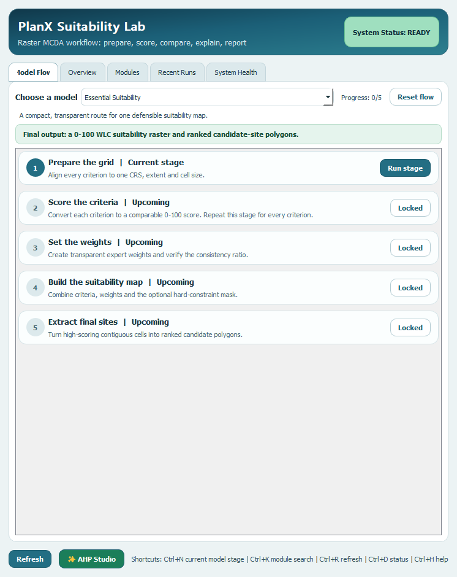
| Console stage | Algorithm | Where in this guide |
|---|---|---|
| 1 Prepare the grid | Data Harmonizer | Step 2 |
| 2 Score the criteria | Normalizer / Reclassify by table | Step 3 |
| 3 Set the weights | AHP Weights (and AHP Studio) | Step 4 |
| 4 Build the suitability map | WLC Suitability | Steps 5 and 7 |
| 5 Extract final sites | Candidate Site Extractor | Step 8 |
Why two stages?
WLC Suitability accepts at most 6 criteria per run. With 14 criteria the model is therefore built hierarchically: the 14 criteria are grouped into four themes (components), each weighted by its own AHP, and the four components are weighted by a top-level AHP. This is also easier to defend, because each pairwise comparison only involves 3 or 4 related items.
| Component | Criteria | Count |
|---|---|---|
| Terrain | C01, C02, C03 | 3 |
| Water and fault risk | C04, C05, C06 | 3 |
| Vegetation and climate | C07, C08, C09, C10 | 4 |
| Access and built fabric | C11, C12, C13, C14 | 4 |
| Code | Criterion | Source raster | Unit | Direction | Component |
|---|---|---|---|---|---|
| C01 | Slope | 02_egim_derece.tif | degrees | higher is worse | Terrain |
| C02 | TPI (absolute) | 05_tpi_150m.tif | m | higher is worse | Terrain |
| C03 | Elevation | 01_dem_yukseklik.tif | m | higher is worse | Terrain |
| C04 | HAND | 12_hand_m.tif | m | higher is better | Water and fault risk |
| C05 | TWI | 14_twi_islaklik_indeksi.tif | ln | higher is worse | Water and fault risk |
| C06 | Distance to active fault | 72_mesafe_diri_fay_m.tif | m | higher is better | Water and fault risk |
| C07 | EVI (summer 2024) | 25_evi_yaz_2024.tif | index | higher is better | Vegetation and climate |
| C08 | Land surface temperature | 20_lst_yaz_ortalama.tif | deg C | higher is worse | Vegetation and climate |
| C09 | Albedo | 23_albedo_yaz.tif | 0-1 | higher is better | Vegetation and climate |
| C10 | Cropland probability | 39_dw_tarim_olasiligi.tif | 0-1 | higher is worse | Vegetation and climate |
| C11 | Distance to roads | 65_mesafe_yol_m.tif | m | higher is worse | Access and built fabric |
| C12 | Distance to main roads | 66_mesafe_ana_karayolu_m.tif | m | higher is worse | Access and built fabric |
| C13 | Distance to buildings | 68_mesafe_bina_m.tif | m | higher is worse | Access and built fabric |
| C14 | Building density | 69_bina_yogunlugu_300m.tif | 0-1 | higher is better | Access and built fabric |
Raster file names in the data package are abbreviated and partly non-English. Glossary: egim = slope, yukseklik = elevation, mesafe = distance, diri fay = active fault, yaz = summer, tarim = agriculture, bina = building, yogunlugu = density, orani = ratio, yol = road, ana karayolu = main highway, su sikligi = water frequency, kisit = constraint, ova koruma = plain protection, arazi kullanimi = land use, kirpik = clipped, calisma alani = study area.
1Load the data and check the grid
- Create a new QGIS project and set the project CRS to EPSG:32635 (bottom-right corner).
- Use Layer → Add Layer → Add Raster Layer (Ctrl+Shift+R) and add the 14 rasters listed in the table above from the
02_RASTERLARfolder. Also add03_egim_yuzde.tif(slope in percent) and15_gsw_su_sikligi.tif(surface-water frequency), which are used for the constraint mask. - Add the vector layers from
01_CALISMA_ALANI:kisit_vektorleri_kirpik.gpkg(layers02_buyuk_ova_korumaand05_arazi_kullanimi_cdp100k) anddiri_fay_2026.gpkg(active faults). - Open Layer Properties → Information for each raster and confirm the same CRS, size and pixel size.
Measured on the example data: all 14 criterion rasters are 728 × 584 cells at 30 m in EPSG:32635, with NoData = −9999. They already share one grid, so Step 2 will confirm this rather than change anything.
diri_fay_2026.gpkg is stored in EPSG:5253, not EPSG:32635. Using it without reprojecting shifts the faults by roughly 1.7 km. Step 6 reprojects it explicitly.2Align all criteria — Data Harmonizer
Open Processing Toolbox → PlanX Suitability Lab → Core → Data Harmonizer. Even when rasters look identical, harmonizing produces a manifest you can attach to your report.
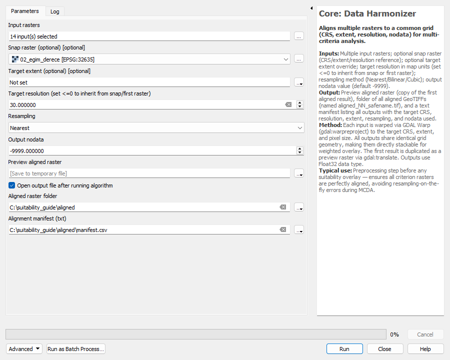
| Parameter | Value | Why |
|---|---|---|
| Input rasters | the 14 criterion rasters (click … and tick them) | All criteria that will be scored |
| Snap raster | 02_egim_derece | Defines the master grid, so cells never shift |
| Target extent | empty | The snap raster extent is used |
| Target resolution | 30 | Native cell size; no resampling needed |
| Resampling | Nearest neighbour | Safe default; use Bilinear only for smooth continuous data that really needs resampling |
| NoData | −9999 | Matches the data package |
| Aligned raster folder | a new folder, for example C:\suitability_guide\aligned | Aligned copies are written here |
| Manifest | manifest.csv in the same folder | Audit trail |
Click Run. The manifest reported: 14 inputs, target CRS EPSG:32635, resolution 30 m, extent 550620, 4209540 : 572460, 4227060, resampling Nearest, NoData −9999.
In this guide the following steps use the original rasters (they were already aligned). With your own data, use the files written to the aligned folder instead.
3Score every criterion on one 0–100 scale
Different criteria have different units, so each is converted into five tiers scored 100 / 80 / 60 / 40 / 20. A score of 100 means most suitable. The tool is the QGIS native Reclassify by table (Processing Toolbox → Raster analysis).
How the table is built
- Four breakpoints define five tiers. Each tier is a range
minimum < value ≤ maximum(set Range boundaries to min < value ≤ max). - For a higher is worse criterion (for example slope) the lowest tier scores 100 and the highest tier scores 20. For higher is better it is the reverse.
- Use −1000000000 as the open lower bound of tier 1 and 1000000000 as the open upper bound of tier 5.
- Set Output NoData to −9999 and Use NoData when no range matches on; Output data type Float32.
Worked example, C01 Slope (degrees):
| Minimum | Maximum | Value |
|---|---|---|
| −1000000000 | 1 | 100 |
| 1 | 2.5 | 80 |
| 2.5 | 5 | 60 |
| 5 | 8 | 40 |
| 8 | 1000000000 | 20 |
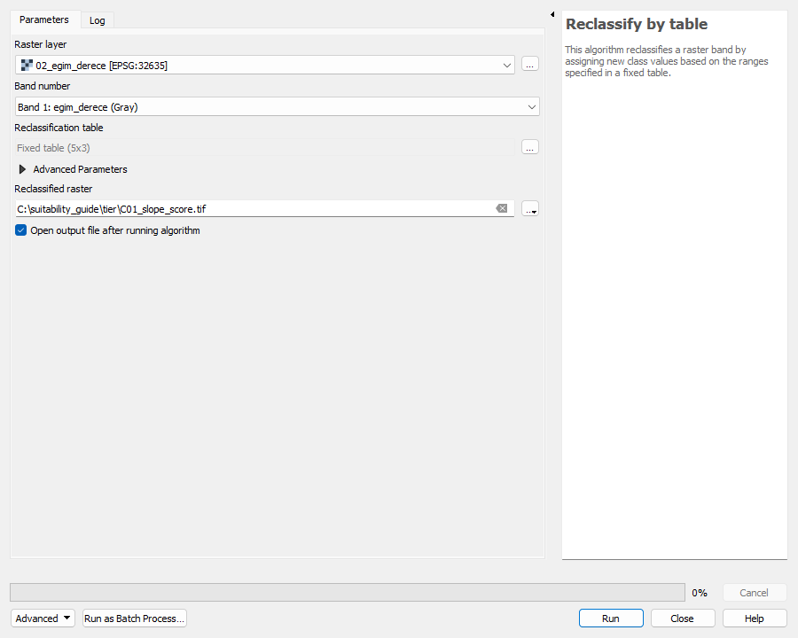
Repeat the reclassification for all 14 criteria with the breakpoints in the sections below. The breakpoints are teaching values chosen from the data distribution; replace them with legal or local standards where those exist.
C01 — Slope
Input: 02_egim_derece.tif. Direction: higher value is worse. Steep ground raises grading cost and landslide exposure. Gentle slopes score highest.
| Tier | Source value | Score | Share of grid |
|---|---|---|---|
| 1 | ≤ 1 | 100 | 33.5 % |
| 2 | > 1 and ≤ 2.5 | 80 | 14.8 % |
| 3 | > 2.5 and ≤ 5 | 60 | 7.5 % |
| 4 | > 5 and ≤ 8 | 40 | 5.4 % |
| 5 | > 8 | 20 | 38.8 % |
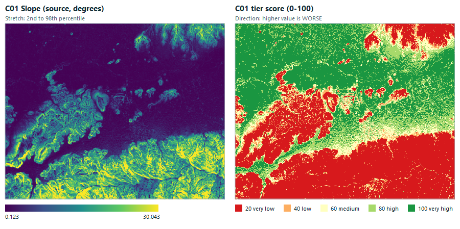
Output name: C01_slope_score.tif
C02 — TPI (absolute)
Input: 05_tpi_150m.tif (via tpi_abs.tif). Direction: higher value is worse. Topographic Position Index at 150 m. Large positive or negative values mark ridges and hollows, so the absolute value is scored.
Extra step for this criterion. TPI is signed, so first run Processing Toolbox → GDAL → Raster miscellaneous → Raster calculator with the formula abs(A) on the TPI raster (NoData −9999, Float32) and save tpi_abs.tif. Then reclassify tpi_abs.
| Tier | Source value | Score | Share of grid |
|---|---|---|---|
| 1 | ≤ 0.5 | 100 | 39.4 % |
| 2 | > 0.5 and ≤ 1.5 | 80 | 18.2 % |
| 3 | > 1.5 and ≤ 3 | 60 | 10.3 % |
| 4 | > 3 and ≤ 6 | 40 | 13.0 % |
| 5 | > 6 | 20 | 19.1 % |
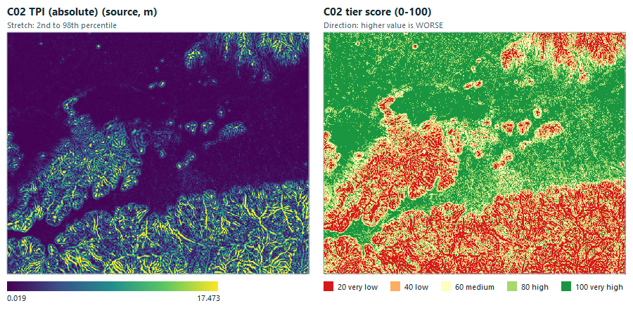
Output name: C02_tpi_score.tif
C03 — Elevation
Input: 01_dem_yukseklik.tif. Direction: higher value is worse. Higher ground costs more to serve with infrastructure and is more exposed. The study area spans roughly 21 m to 1,144 m.
| Tier | Source value | Score | Share of grid |
|---|---|---|---|
| 1 | ≤ 40 | 100 | 15.6 % |
| 2 | > 40 and ≤ 80 | 80 | 31.4 % |
| 3 | > 80 and ≤ 150 | 60 | 18.2 % |
| 4 | > 150 and ≤ 300 | 40 | 12.6 % |
| 5 | > 300 | 20 | 22.1 % |
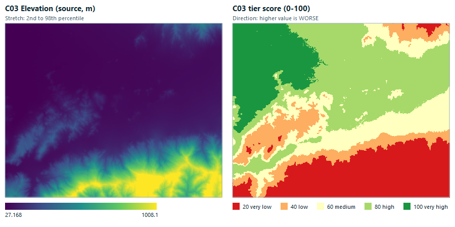
Output name: C03_elevation_score.tif
C04 — HAND
Input: 12_hand_m.tif. Direction: higher value is better. Height Above Nearest Drainage. Cells that sit well above the drainage network are safer from flooding.
| Tier | Source value | Score | Share of grid |
|---|---|---|---|
| 1 | ≤ 2 | 20 | 27.9 % |
| 2 | > 2 and ≤ 5 | 40 | 12.8 % |
| 3 | > 5 and ≤ 10 | 60 | 8.7 % |
| 4 | > 10 and ≤ 20 | 80 | 8.0 % |
| 5 | > 20 | 100 | 42.5 % |
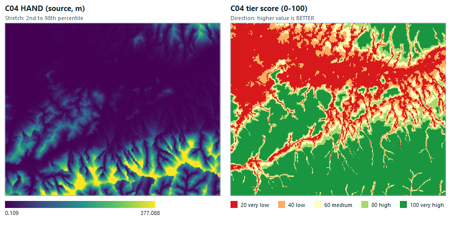
Output name: C04_hand_score.tif
C05 — TWI
Input: 14_twi_islaklik_indeksi.tif. Direction: higher value is worse. Topographic Wetness Index. A high index means water accumulates, which is unfavourable for building.
| Tier | Source value | Score | Share of grid |
|---|---|---|---|
| 1 | ≤ 7 | 100 | 26.9 % |
| 2 | > 7 and ≤ 9 | 80 | 24.3 % |
| 3 | > 9 and ≤ 11 | 60 | 24.7 % |
| 4 | > 11 and ≤ 13 | 40 | 12.2 % |
| 5 | > 13 | 20 | 11.9 % |
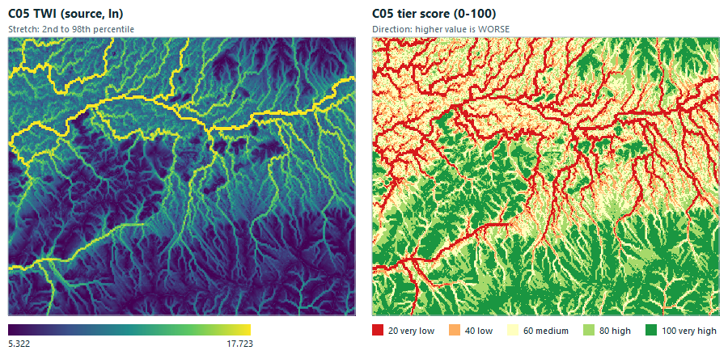
Output name: C05_twi_score.tif
C06 — Distance to active fault
Input: 72_mesafe_diri_fay_m.tif. Direction: higher value is better. Distance to the nearest active fault. Farther is safer. Most of the area is far from the three mapped faults, so tier 100 dominates.
| Tier | Source value | Score | Share of grid |
|---|---|---|---|
| 1 | ≤ 100 | 20 | 1.4 % |
| 2 | > 100 and ≤ 250 | 40 | 1.8 % |
| 3 | > 250 and ≤ 500 | 60 | 2.9 % |
| 4 | > 500 and ≤ 1000 | 80 | 5.8 % |
| 5 | > 1000 | 100 | 88.1 % |
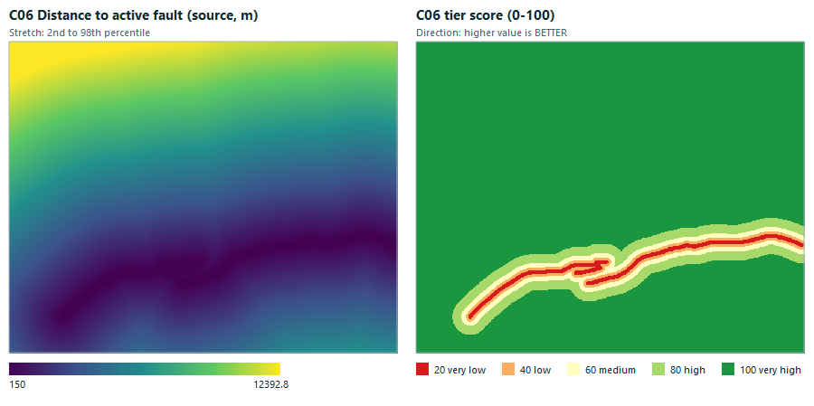
Output name: C06_distance_to_active_fault_score.tif
C07 — EVI (summer 2024)
Input: 25_evi_yaz_2024.tif. Direction: higher value is better. Enhanced Vegetation Index for summer 2024. Denser vegetation indicates healthier, cooler surroundings and scores higher.
| Tier | Source value | Score | Share of grid |
|---|---|---|---|
| 1 | ≤ 0.12 | 20 | 7.2 % |
| 2 | > 0.12 and ≤ 0.2 | 40 | 18.6 % |
| 3 | > 0.2 and ≤ 0.3 | 60 | 23.3 % |
| 4 | > 0.3 and ≤ 0.45 | 80 | 31.0 % |
| 5 | > 0.45 | 100 | 20.0 % |
Direction is set to higher = better here. If your policy treats vegetated land as something to protect from building, reverse the direction.
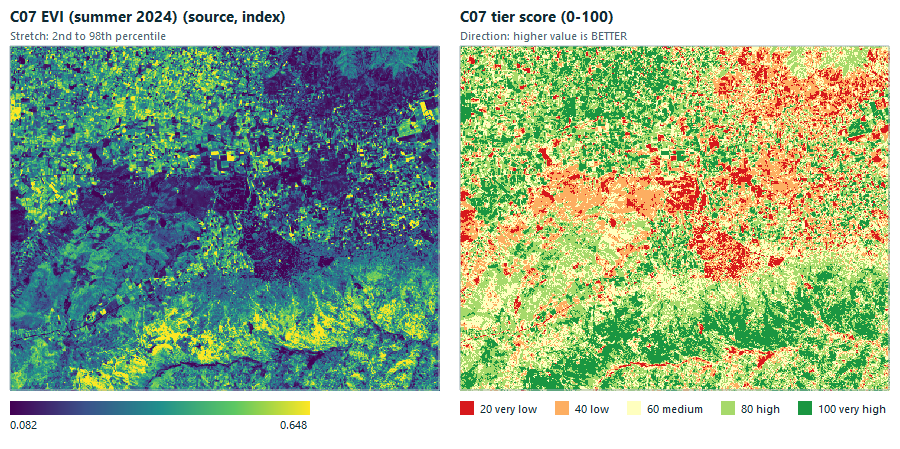
Output name: C07_evi_score.tif
C08 — Land surface temperature
Input: 20_lst_yaz_ortalama.tif. Direction: higher value is worse. Summer land surface temperature (Landsat). Hot cells score lower because they add to urban heat load.
| Tier | Source value | Score | Share of grid |
|---|---|---|---|
| 1 | ≤ 38 | 100 | 17.1 % |
| 2 | > 38 and ≤ 41 | 80 | 20.1 % |
| 3 | > 41 and ≤ 44 | 60 | 27.4 % |
| 4 | > 44 and ≤ 47 | 40 | 21.3 % |
| 5 | > 47 | 20 | 14.2 % |
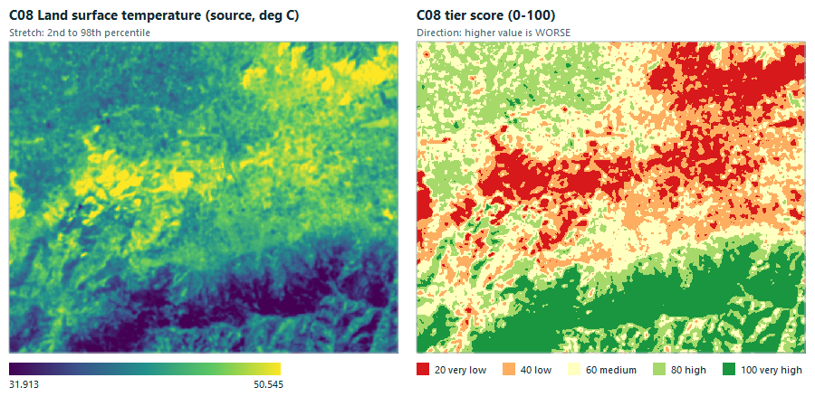
Output name: C08_land_surface_temperature_score.tif
C09 — Albedo
Input: 23_albedo_yaz.tif. Direction: higher value is better. Summer surface albedo. Brighter surfaces reflect more heat, so higher albedo scores higher.
| Tier | Source value | Score | Share of grid |
|---|---|---|---|
| 1 | ≤ 0.16 | 20 | 21.9 % |
| 2 | > 0.16 and ≤ 0.18 | 40 | 22.8 % |
| 3 | > 0.18 and ≤ 0.2 | 60 | 30.9 % |
| 4 | > 0.2 and ≤ 0.22 | 80 | 15.6 % |
| 5 | > 0.22 | 100 | 8.8 % |
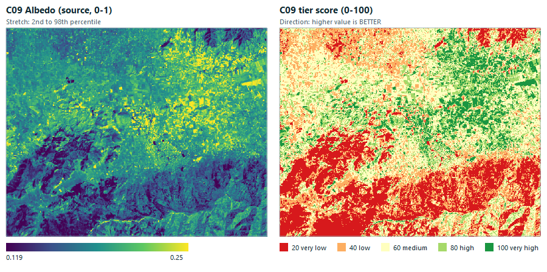
Output name: C09_albedo_score.tif
C10 — Cropland probability
Input: 39_dw_tarim_olasiligi.tif. Direction: higher value is worse. Dynamic World probability of cropland. Productive agricultural land should be kept open, so a high probability scores lower.
| Tier | Source value | Score | Share of grid |
|---|---|---|---|
| 1 | ≤ 0.15 | 100 | 35.0 % |
| 2 | > 0.15 and ≤ 0.3 | 80 | 15.3 % |
| 3 | > 0.3 and ≤ 0.45 | 60 | 8.0 % |
| 4 | > 0.45 and ≤ 0.6 | 40 | 30.2 % |
| 5 | > 0.6 | 20 | 11.5 % |
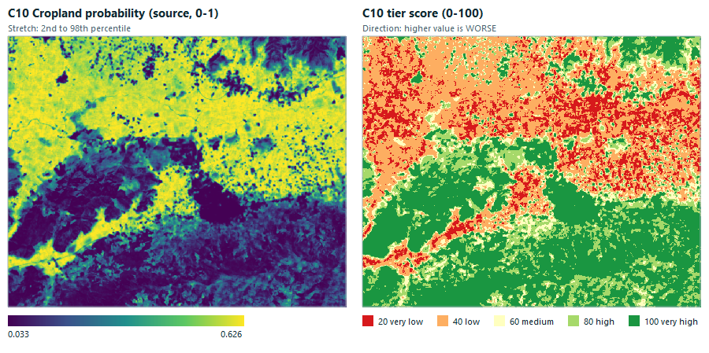
Output name: C10_cropland_probability_score.tif
C11 — Distance to roads
Input: 65_mesafe_yol_m.tif. Direction: higher value is worse. Distance to any road. Settling close to the road network lowers servicing cost.
| Tier | Source value | Score | Share of grid |
|---|---|---|---|
| 1 | ≤ 50 | 100 | 11.9 % |
| 2 | > 50 and ≤ 150 | 80 | 15.2 % |
| 3 | > 150 and ≤ 400 | 60 | 22.7 % |
| 4 | > 400 and ≤ 1000 | 40 | 26.0 % |
| 5 | > 1000 | 20 | 24.1 % |
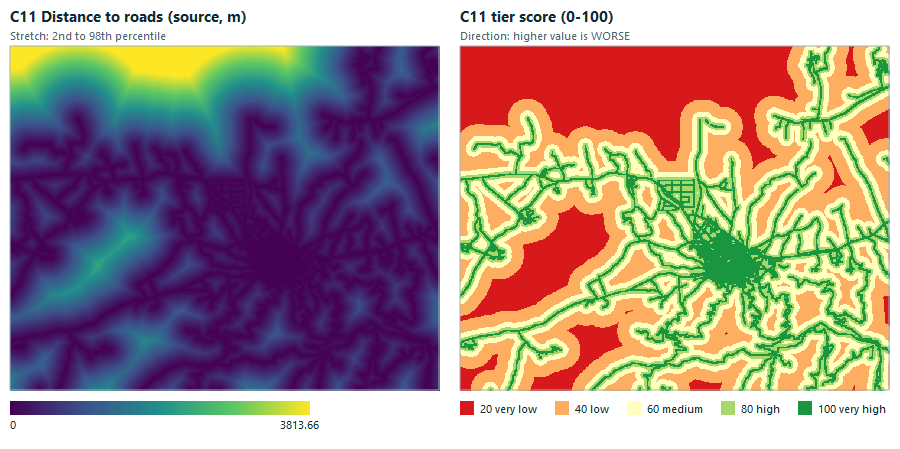
Output name: C11_distance_to_roads_score.tif
C12 — Distance to main roads
Input: 66_mesafe_ana_karayolu_m.tif. Direction: higher value is worse. Distance to main highways. Close to a main highway is treated as better connected, but see the note on direction below.
| Tier | Source value | Score | Share of grid |
|---|---|---|---|
| 1 | ≤ 150 | 100 | 14.8 % |
| 2 | > 150 and ≤ 400 | 80 | 17.3 % |
| 3 | > 400 and ≤ 800 | 60 | 20.5 % |
| 4 | > 800 and ≤ 1500 | 40 | 21.6 % |
| 5 | > 1500 | 20 | 25.8 % |
Direction is set to high = bad, meaning the nearer a main highway the better. A planning team may instead want a buffer away from highways: flip the direction if so.
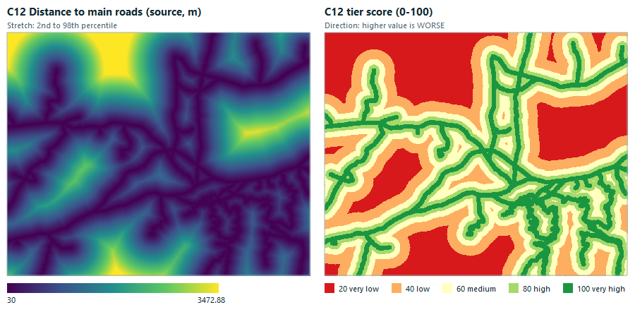
Output name: C12_distance_to_main_roads_score.tif
C13 — Distance to buildings
Input: 68_mesafe_bina_m.tif. Direction: higher value is worse. Distance to the nearest existing building. Cells next to existing fabric are cheaper to connect.
| Tier | Source value | Score | Share of grid |
|---|---|---|---|
| 1 | ≤ 50 | 100 | 10.9 % |
| 2 | > 50 and ≤ 150 | 80 | 18.6 % |
| 3 | > 150 and ≤ 400 | 60 | 25.1 % |
| 4 | > 400 and ≤ 1000 | 40 | 24.6 % |
| 5 | > 1000 | 20 | 20.8 % |
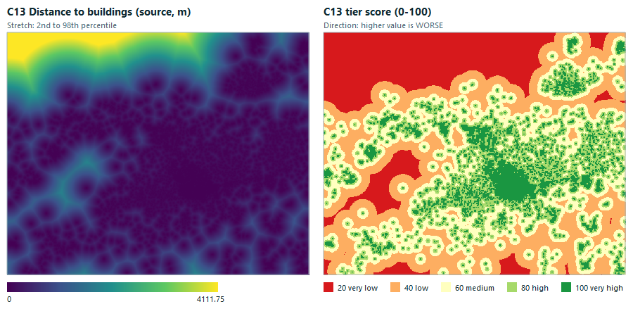
Output name: C13_distance_to_buildings_score.tif
C14 — Building density
Input: 69_bina_yogunlugu_300m.tif. Direction: higher value is better. Share of built-up area in a window of about 600 m. Denser surroundings mean existing urban fabric.
| Tier | Source value | Score | Share of grid |
|---|---|---|---|
| 1 | ≤ 0.0005 | 20 | 57.6 % |
| 2 | > 0.0005 and ≤ 0.003 | 40 | 18.7 % |
| 3 | > 0.003 and ≤ 0.02 | 60 | 16.5 % |
| 4 | > 0.02 and ≤ 0.1 | 80 | 4.7 % |
| 5 | > 0.1 | 100 | 2.4 % |
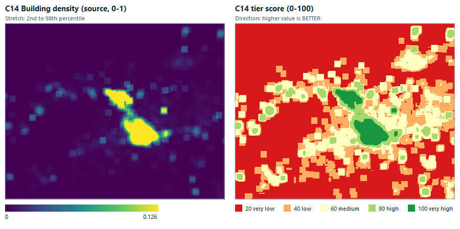
Output name: C14_building_density_score.tif
4Derive weights with AHP
AHP turns pairwise judgements into weights. Compare each pair using Saaty's scale: 1 = equal, 3 = moderate, 5 = strong, 7 = very strong, 9 = extreme; use the reciprocal (1/3, 0.5, …) when the second item matters more. Rows are compared against columns. The consistency ratio (CR) must be at or below 0.10.
Option A — AHP Studio (interactive)
Click AHP Studio in the dock. Pick the criteria, move the sliders or click the scale buttons for each pair, and read the weights and the CR badge live.
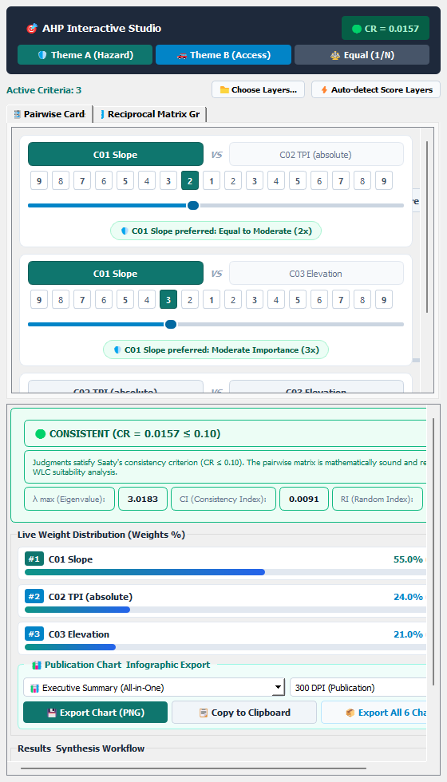
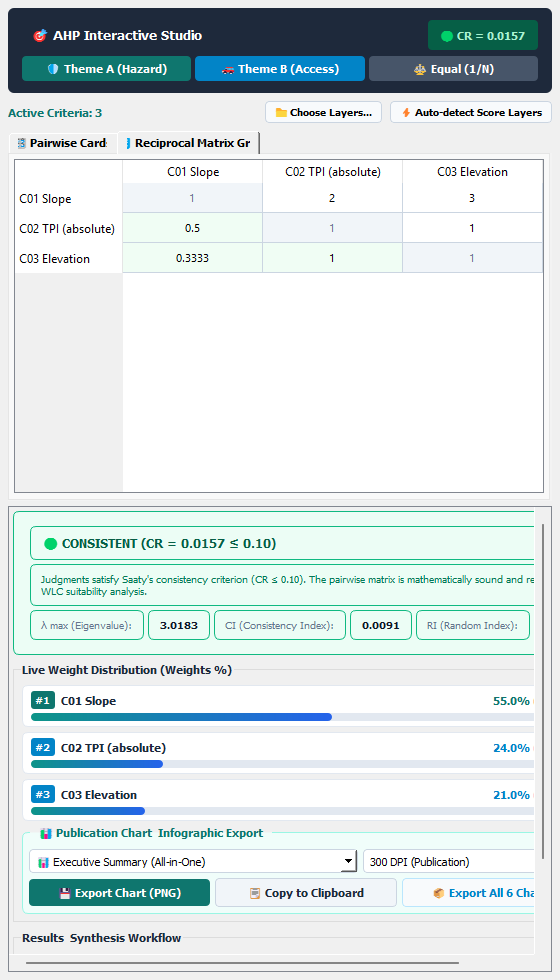
Option B — AHP Weights algorithm (repeatable)
Open Processing Toolbox → PlanX Suitability Lab → Weights → AHP Weights. Paste the matrix as JSON and (optionally) list the criterion names. The output table has criterion_id, weight, cr and cr_ok.
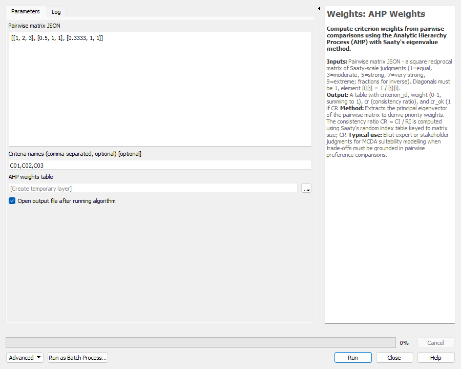
Run it once per component. The four component analyses:
Component 1: Terrain
Criteria: C01 Slope, C02 TPI (absolute), C03 Elevation.
Pairwise matrix (rows are compared with columns)
| C01 | C02 | C03 | |
|---|---|---|---|
| C01 | 1 | 2 | 3 |
| C02 | 0.5 | 1 | 1 |
| C03 | 0.3333 | 1 | 1 |
Resulting weights — CR = 0.0157 (consistent)
| Criterion | Weight |
|---|---|
| C01 Slope | 0.550 |
| C02 TPI (absolute) | 0.240 |
| C03 Elevation | 0.210 |
Component 2: Water and fault risk
Criteria: C04 HAND, C05 TWI, C06 Distance to active fault.
Pairwise matrix (rows are compared with columns)
| C04 | C05 | C06 | |
|---|---|---|---|
| C04 | 1 | 3 | 1 |
| C05 | 0.3333 | 1 | 0.3333 |
| C06 | 1 | 3 | 1 |
Resulting weights — CR = 0.0000 (consistent)
| Criterion | Weight |
|---|---|
| C04 HAND | 0.429 |
| C05 TWI | 0.143 |
| C06 Distance to active fault | 0.429 |
Component 3: Vegetation and climate
Criteria: C07 EVI (summer 2024), C08 Land surface temperature, C09 Albedo, C10 Cropland probability.
Pairwise matrix (rows are compared with columns)
| C07 | C08 | C09 | C10 | |
|---|---|---|---|---|
| C07 | 1 | 0.5 | 1 | 0.5 |
| C08 | 2 | 1 | 2 | 1 |
| C09 | 1 | 0.5 | 1 | 0.5 |
| C10 | 2 | 1 | 2 | 1 |
Resulting weights — CR = 0.0000 (consistent)
| Criterion | Weight |
|---|---|
| C07 EVI (summer 2024) | 0.167 |
| C08 Land surface temperature | 0.333 |
| C09 Albedo | 0.167 |
| C10 Cropland probability | 0.333 |
Component 4: Access and built fabric
Criteria: C11 Distance to roads, C12 Distance to main roads, C13 Distance to buildings, C14 Building density.
Pairwise matrix (rows are compared with columns)
| C11 | C12 | C13 | C14 | |
|---|---|---|---|---|
| C11 | 1 | 2 | 1 | 2 |
| C12 | 0.5 | 1 | 1 | 1 |
| C13 | 1 | 1 | 1 | 1 |
| C14 | 0.5 | 1 | 1 | 1 |
Resulting weights — CR = 0.0225 (consistent)
| Criterion | Weight |
|---|---|
| C11 Distance to roads | 0.347 |
| C12 Distance to main roads | 0.204 |
| C13 Distance to buildings | 0.246 |
| C14 Building density | 0.204 |
5Combine each component — WLC Suitability
Open Processing Toolbox → PlanX Suitability Lab → Compose → WLC Suitability. Select the tier rasters of one component, paste the weights as a comma-separated list in the same order as the rasters are listed, leave the constraint empty for now, and save the output.
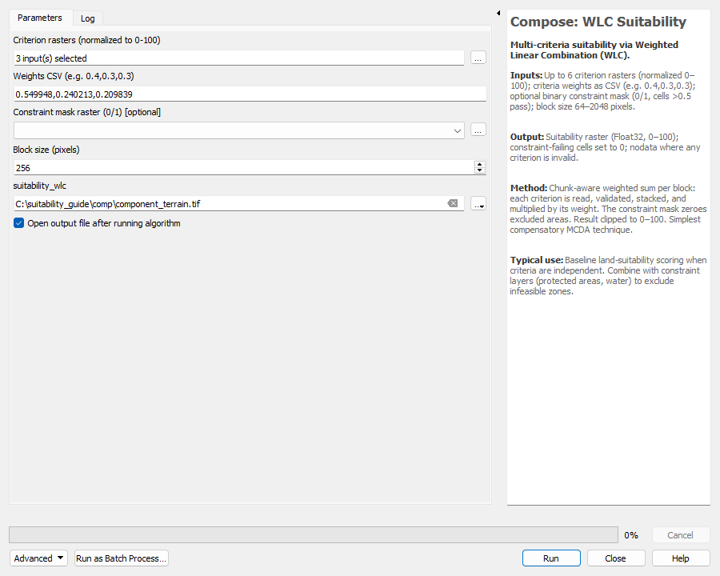
1. Terrain
Rasters: C01_slope_score.tif, C02_tpi_score.tif, C03_elevation_score.tif
Weights CSV: 0.549948,0.240213,0.209839
Output: component_terrain.tif
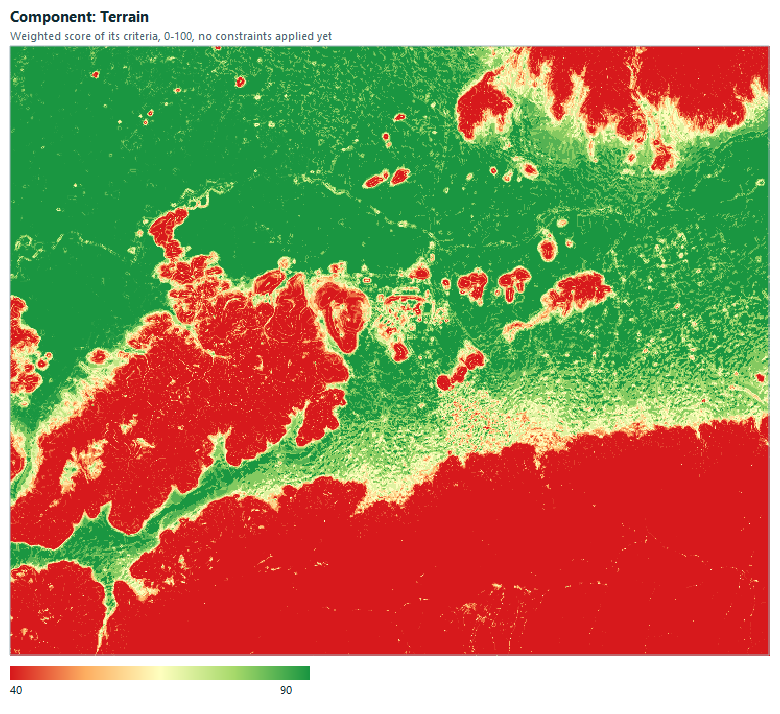
2. Water and fault risk
Rasters: C04_hand_score.tif, C05_twi_score.tif, C06_distance_to_active_fault_score.tif
Weights CSV: 0.428576,0.142849,0.428576
Output: component_water.tif
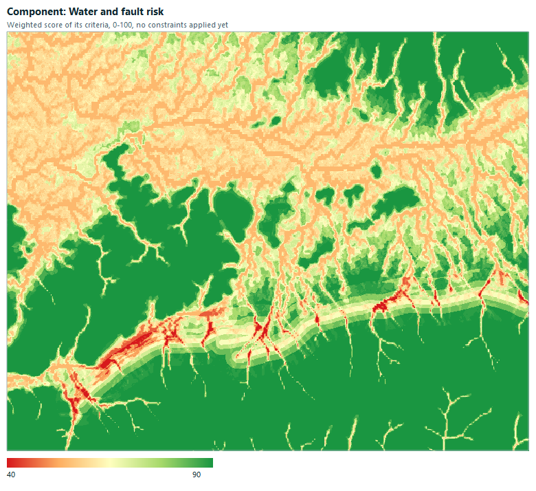
3. Vegetation and climate
Rasters: C07_evi_score.tif, C08_land_surface_temperature_score.tif, C09_albedo_score.tif, C10_cropland_probability_score.tif
Weights CSV: 0.166667,0.333333,0.166667,0.333333
Output: component_vegetation.tif
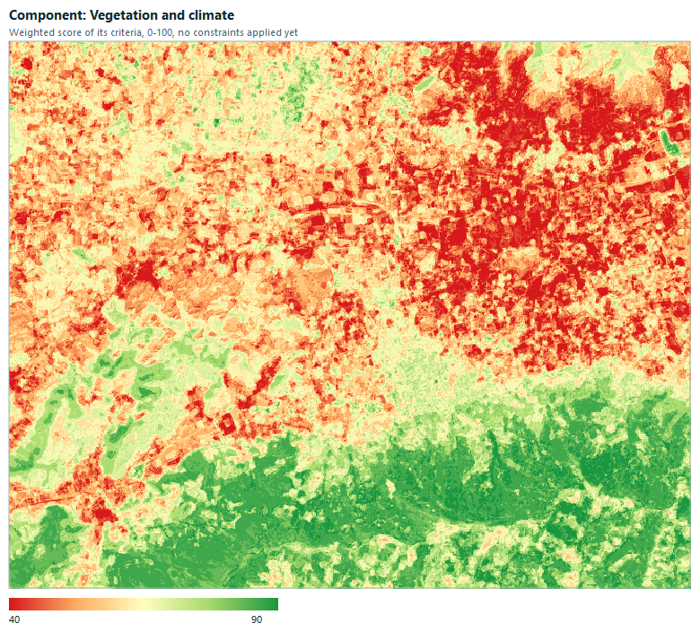
4. Access and built fabric
Rasters: C11_distance_to_roads_score.tif, C12_distance_to_main_roads_score.tif, C13_distance_to_buildings_score.tif, C14_building_density_score.tif
Weights CSV: 0.346543,0.203595,0.246266,0.203595
Output: component_access.tif
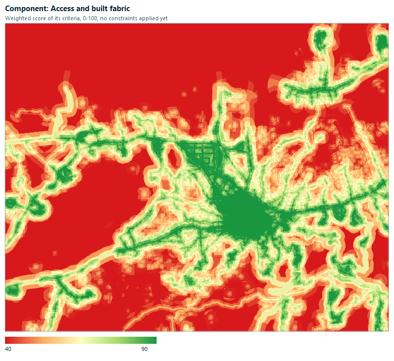
6Build the hard-constraint mask
Hard constraints are cells where settlement is not allowed at all, whatever the score. The mask is a single raster: 1 = settleable, 0 = excluded. Six constraints are combined (all thresholds are teaching assumptions; replace them with your legal limits):
| Constraint | Rule | Source |
|---|---|---|
| Large-plain protection | the whole polygon layer is excluded | 02_buyuk_ova_koruma |
| Steep slope | slope > 20 % | 03_egim_yuzde.tif |
| Forest | expression "KULLANIM_TEXT" LIKE 'ORMAN%' | 05_arazi_kullanimi_cdp100k |
| Archaeological site, 1st degree | expression "KULLANIM_TEXT" LIKE '1. DERECE ARKEOLOJ%' | 05_arazi_kullanimi_cdp100k |
| Active fault buffer | 100 m buffer around reprojected faults | diri_fay_2026.gpkg |
| Permanent water | surface-water frequency ≥ 50 | 15_gsw_su_sikligi.tif |
The land-use text field stores Turkish characters as ?, which is why the patterns stop before the first accented letter. Check the exact spelling in the attribute table with Select by expression first.
6.1 Select forest and archaeological polygons
Run Extract by expression twice on 05_arazi_kullanimi_cdp100k using the two expressions above. Measured: 5 forest polygons and 1 archaeological polygon.
6.2 Reproject and buffer the faults
Run Reproject layer on diri_fay_2026 with target CRS EPSG:32635 (14 fault lines), then Buffer with distance 100 m, segments 8, Dissolve result ticked.
6.3 Merge and dissolve the vector constraints
Run Merge vector layers with the plain layer, the forest layer, the archaeology layer and the fault buffer (destination CRS EPSG:32635). Then Dissolve the merged layer into constraints_dissolved.
6.4 Rasterize the dissolved constraints
Run Rasterize (vector to raster). Burn 0 into the constrained cells and pre-initialise the raster with 1, so every other cell stays settleable.
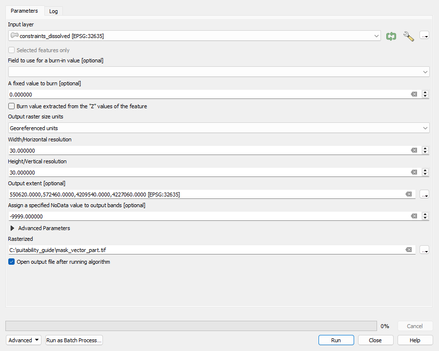
- Input layer:
constraints_dissolved; fixed value to burn: 0; units: georeferenced units; width and height: 30. - Output extent: copy it from the slope raster so the grid matches exactly (
550620, 572460, 4209540, 4227060 [EPSG:32635]). - Assign NoData −9999, output type Float32, and set Pre-initialize the output image with value to 1.
6.5 Add the raster constraints
Open Raster → Raster Calculator (QGIS Raster Calculator). Combine the three layers so a cell stays 1 only if every rule passes:
"mask_vector_part@1" * ("slope_percent@1" <= 20) * ("water_frequency@1" < 50)
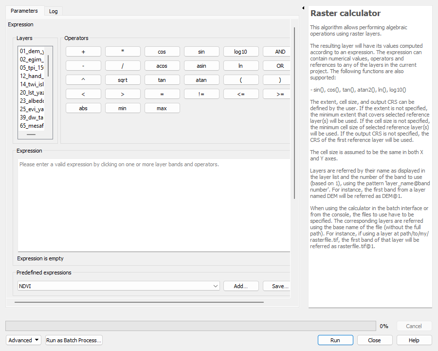
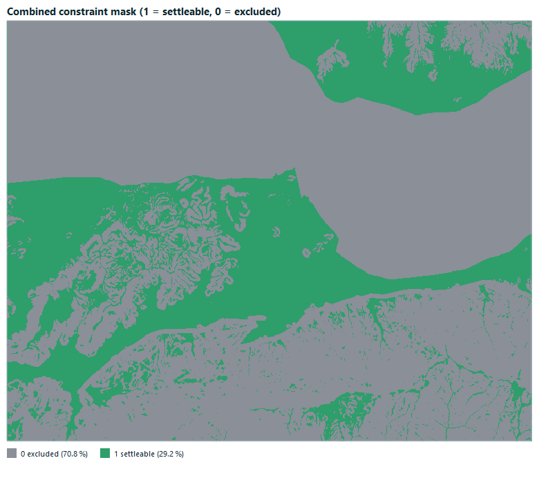
Measured result: 29.2 % of the grid is settleable (about 11,171 ha) and 70.8 % is excluded. Slope > 20 % alone removes 32.8 %; the vector constraints together remove 42.1 %; permanent water removes 0.0 %.
7Weight the components and build the final map
7.1 Top-level AHP
Compare the four components with another AHP Weights run. Use the matrix below.
| Terrain | Water and fault risk | Vegetation and climate | Access and built fabric | |
|---|---|---|---|---|
| Terrain | 1 | 0.5 | 2 | 1 |
| Water and fault risk | 2 | 1 | 4 | 3 |
| Vegetation and climate | 0.5 | 0.25 | 1 | 0.5 |
| Access and built fabric | 1 | 0.3333 | 2 | 1 |
Weights — CR = 0.0076 (consistent)
| Component | Weight |
|---|---|
| Terrain | 0.216 |
| Water and fault risk | 0.480 |
| Vegetation and climate | 0.108 |
| Access and built fabric | 0.196 |
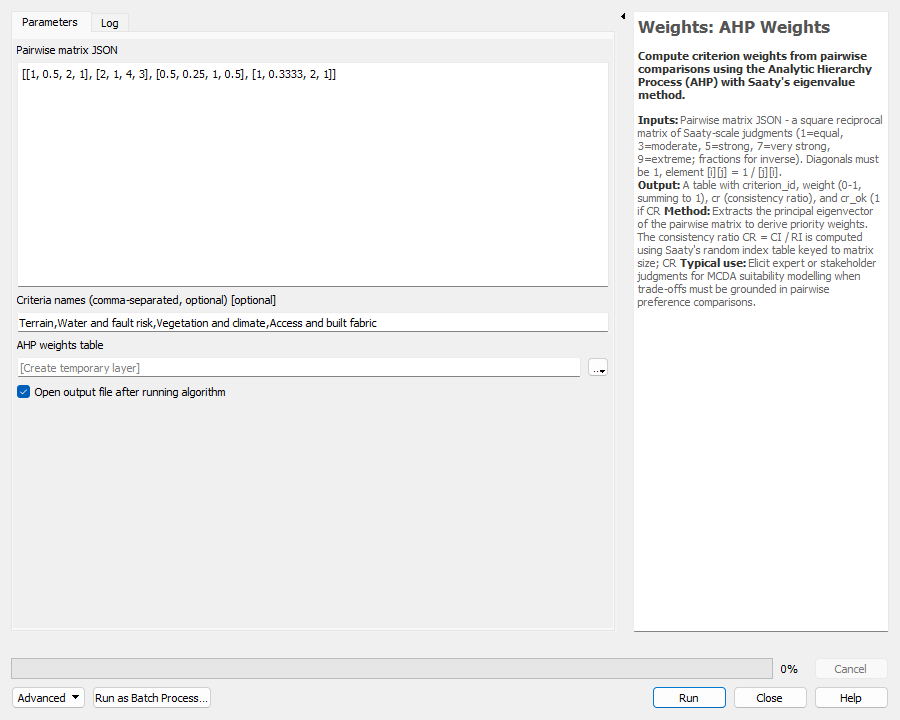
Reading the matrix: water and fault risk is judged 2× as important as terrain, 4× as important as vegetation and climate, and 3× as important as access. That is a hazard-first policy. A different priority only needs a different matrix.
7.2 Final WLC with the constraint mask
Run WLC Suitability again. Select the four component rasters in the order Terrain, Water and fault risk, Vegetation and climate, Access and built fabric, paste the top-level weights, and now set the constraint mask raster.
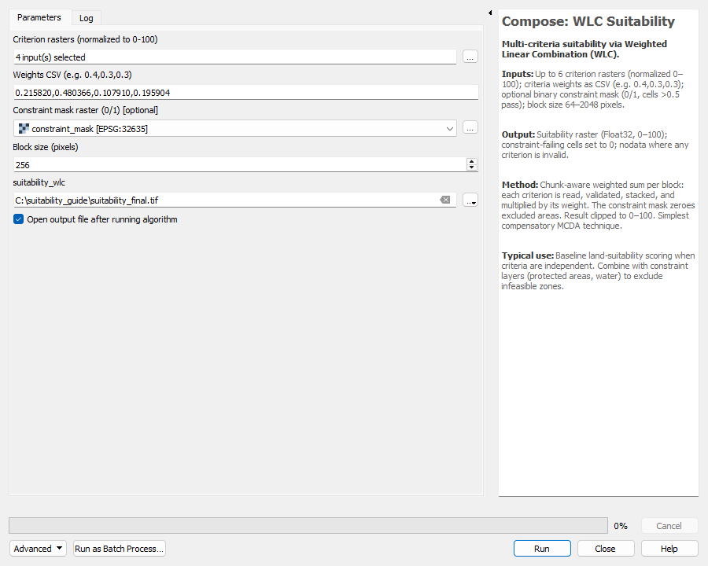
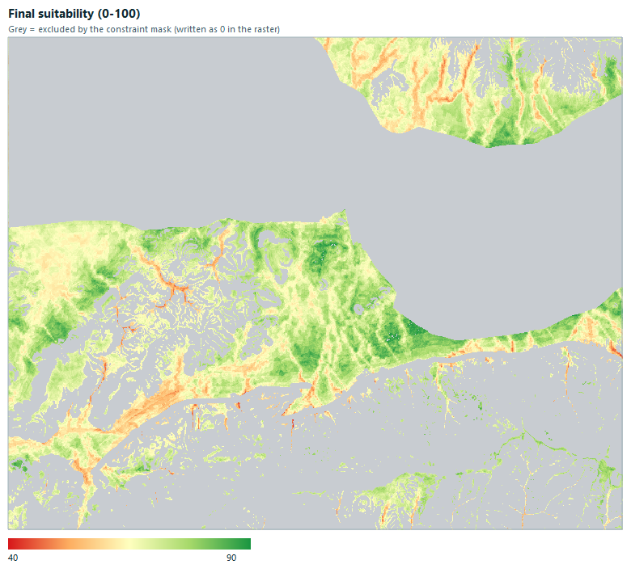
Two-stage versus single-stage: the hierarchical result is not identical to a single WLC with 14 flat weights, because the hierarchy deliberately weights themes rather than individual layers. This is intended, and is why each AHP stays small enough to judge reliably.
8Extract candidate sites
Open Compose → Candidate Site Extractor.
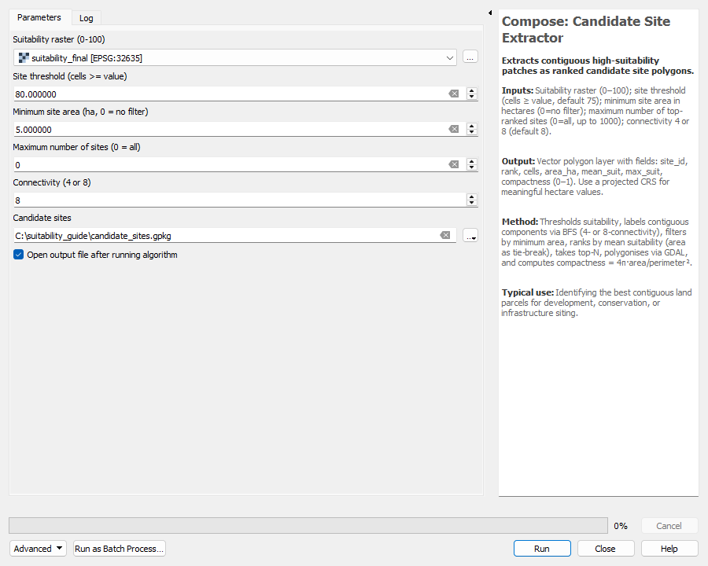
| Parameter | Value | Why |
|---|---|---|
| Suitability raster | suitability_final | The 0–100 map from Step 7 |
| Site threshold | 80 | Roughly the top 5 % of settleable cells (p95 = 80.9). A threshold of 90 would return almost nothing because only 3 ha reach 90. |
| Minimum site area | 5 ha | Drops specks that are too small to plan |
| Maximum number of sites | 0 | 0 means keep all |
| Connectivity | 8 | Diagonal neighbours join one site |
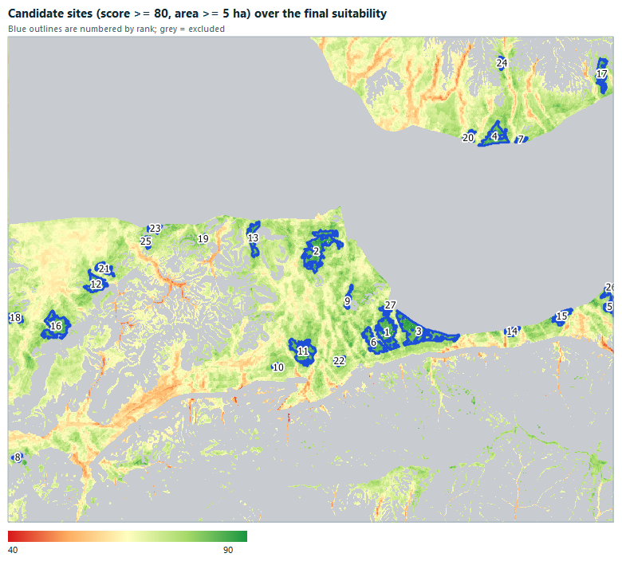
Measured: 27 sites. The attribute table has site_id, rank, cells, area_ha, mean_suit, max_suit and compactness.
| Rank | Site | Area (ha) | Mean score | Max score |
|---|---|---|---|---|
| 3 | 3 | 79.4 | 83.4 | 90.7 |
| 2 | 2 | 77.3 | 83.7 | 91.8 |
| 1 | 1 | 51.3 | 84.3 | 93.9 |
| 16 | 16 | 48.1 | 82.4 | 88.4 |
| 11 | 11 | 47.0 | 82.7 | 88.8 |
| 4 | 4 | 36.1 | 83.2 | 88.4 |
area_ha (the table above is sorted that way).9Check and read the result
| Score class | Area (ha, settleable cells only) |
|---|---|
| <40 | 0 |
| 40-60 | 869 |
| 60-70 | 5,006 |
| 70-80 | 4,561 |
| 80-90 | 731 |
| >=90 | 3 |
- 5th / 50th / 95th percentile of settleable cells: 58.1 / 69.6 / 80.9; range 37.4 – 93.9.
- Most settleable land falls between 60 and 80, which is what a five-tier scheme usually produces. Extreme classes are rare by construction.
- Look at the map, not only the numbers. High scores should sit where you would expect them (gentle slopes, away from faults, near roads). If they do not, re-check the direction of each criterion.
- Run the Sensitivity tools of the plugin (Uncertainty → Weight sensitivity) on the four top-level weights to see how stable the best sites are.
- Export a report with the plugin's reporting algorithms, and keep the harmonizer manifest, all matrices and the breakpoint tables as the methods appendix.
Pitfalls and assumptions
| Symptom | Cause | Fix |
|---|---|---|
| WLC says it accepts at most 6 criteria | Too many rasters in one run | Use the hierarchy in this guide: components first, then a top-level WLC |
| Weights count error | Number of weights differs from number of rasters | Paste exactly one weight per raster, in raster order |
| Raster dimensions error | Criteria are not on one grid | Run Data Harmonizer with a snap raster |
| Faults appear 1.7 km away from where they should be | Fault file is in EPSG:5253 | Reproject to EPSG:32635 first |
| Averages look far too low | Excluded cells are 0 | Compute statistics only where the mask is 1 |
| Almost no candidate sites | Threshold too high for a five-tier score | Use 80–85 and inspect the percentiles first |
| One tier holds almost the whole map | Breakpoints do not fit the data (for example the 30 m building-share raster) | Use the 300 m density raster for C14 or change the breakpoints |
| CR above 0.10 | Judgements contradict each other | Revise the judgements for the most inconsistent pair and run again |
Assumptions to state in your report: tier breakpoints and the 20 % slope, 100 m fault buffer and 50 % water-frequency thresholds are teaching values; the pairwise judgements express one possible planning priority; the model ranks relative suitability and does not replace legal approvals or field surveys.
Quick checklist
- Project in EPSG:32635; 14 criterion rasters, slope in percent and water frequency loaded.
- Data Harmonizer run with a snap raster; manifest saved.
- 14 tier rasters made with Reclassify by table (TPI after
abs), every tier share checked. - Four AHP runs for the components, all CR ≤ 0.10; four component WLC rasters.
- Constraint mask built (fault layer reprojected); settleable share around 29.2 %.
- Top-level AHP, then final WLC with the mask.
- Candidate Site Extractor with threshold 80, minimum 5 ha, all sites.
- Statistics computed on settleable cells only.
Back to the Reference Manual.